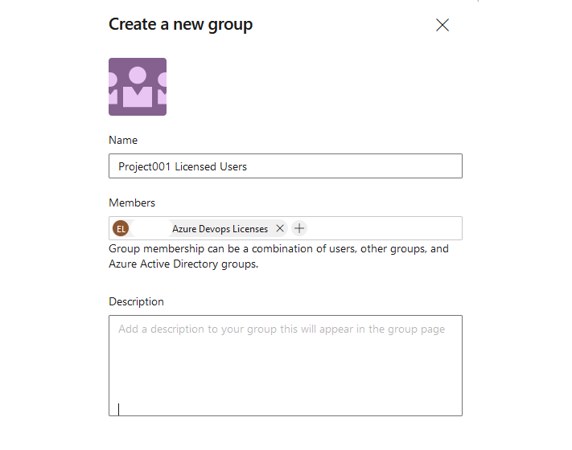
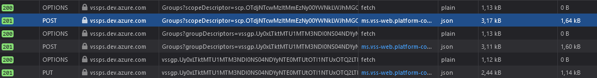

Lately I have been working on a project where I needed to automate the creation of a Azure DevOps project and integrate it with an ITSM system. One of the key requirements of automating the creation was to make sure that a range of different tasks were included in the automation. Among them was the task to Programmatically create and add a AAD-security group to Azure DevOps project
After a quick google search I learned that everything we can do in the portal, can be done via REST API, refer to DevOps (ADO REST API.
Which is awesome! But without knowing the ins and outs of how ADO is built, I was quite unfamiliar with all the endpoints, methods and payloads I would need to aware of. The docs were a huge help but did not get me to the finishing line. I need to know the sequence of requests including their payloads, headers and methods.
Which made me wonder, what if I can use the network capture in my browser when I manually add Azure Security groups to a DevOps Project and (hopefully) learn something useful.
Before we start, lets cover how I authenticated to ADO from my python script.
Basic Auth is used for authentication (at least when for debugging purposes). I wrote a wrapper class for DevOps which takes care of authentication and interacting with the ADO REST API. I wrote python because it is awesome to work with when something needs to be written quickly, and because I am building everything as a Azure Function App.
Here we see the authentication part of my Function App
import base64
import json
import logging
import requests
class HttpRequest(object):
def __init__(self, url:str, method:str, headers:dict=None, payload:dict=None):
if headers == None:
headers = {}
if payload == None:
payload = {}
self.url = url
self.method = method
self.headers = headers
self.payload = payload
@property
def http_settings(self):
return {
'url': self.url,
'method': self.method,
'headers': self.headers,
'payload': self.payload
}
class Authentication(HttpRequest):
def __init__(self, url: str = None, method: str = None, headers: dict = None, payload: dict = None):
super().__init__(url, method, headers, payload)
def init_devops(self, username, password):
"""
Create a basic authentication header used by devops
Returns a dictionary
"""
auth_string = base64.b64encode(
f'{username}:{password}'.encode()).decode()
return {
'Content-Type': 'application/json',
'Authorization': f'Basic {auth_string}',
}
class DevOps(HttpRequest):
def __init__(self, organization, username, password,
url: str = None, method: str = None, headers: dict = None, payload: dict = None):
super().__init__(url, method, headers, payload)
self.base_url = f"https://dev.azure.com/{organization}"
self.vseax_url = f"https://vsaex.dev.azure.com/{organization}"
self.vssps_url = f"https://vssps.dev.azure.com/{organization}"
self.headers = Authentication().init_devops(username, password)
This acticle does assume that the following have been created:
By using the developer tools's networking monitor it is possible to capture the order of HTTP requests made to the DevOps API.
Adding a new group to a project from the portal looks like the following:

Figure 1
When capturing the events that occur after submitting the form the following can be observed: 
Looks interesting, lets take a deeper look at the POST and PUT messages
Interpretation
POST https://vssps.dev.azure.com/[orgName]/_apis/Graph/Groups?scopeDescriptor=scp.OTdjNTcwMzItMmEzNy00YWNkLWJhMGQtNzQ0YjhkNTdhY2Vh
_apis/Graph/GroupsscopeDescriptor=[theScopeDecriptorOfOurDevOpsProject]Payload
{
"displayName":"XXX Azure Devops Licenses","description":"",
"storageKey":"",
"crossProject":false,
"descriptor":"",
"restrictedVisibility":false,"specialGroupType":"Generic"
}
This endpoint adds a vssps group (seen in the Name field in figure 1) group to the project scope of our DevOps Organization.
Response:
{
...
...
descriptor: "vssgp.Uy0xLTk..."
}
POST: https://vssps.dev.azure.com/[Organization]/_apis/Graph/Groups?groupDescriptors=vssgp.Uy0xLTk...
_apis/Graph/GroupsgroupDescriptors=[groupDescriptorFromLastRequest]Payload
{
"originId":"194b296b-7f7f-4bb7-8d92-f1122e286b60","storageKey":""
}
The payload contains the objectId of the request Azure AD security group. Which is sent to a url containing a reference to the previously created group.
response
{
...
...
descriptor: "aadgp.Uy0xLTkt..."
}
PUT https://vssps.dev.azure.com/[Organazation]/_apis/Graph/Memberships/aadgp.Uy0xLTkt.../vssgp.Uy0xLTkt...
__apis/Graph/MembershipsNoneNoneNeither payload nor parameters, however, we can clearly see that the url is structered in such as way that both vsspgp and aadgp descriptors are included. Occording to the Official docs this creates a so called membership between a container (our vss group) and a subject (the Azure Active Directory group).
Response:
{
containerDescriptor: "vssgp.Uy0xLTkt...ˇX",
memberDescriptor: "aadgp.Uy0xLTkt..."
}
A membership basically describes a linkage between a VSS and AAD group
Lets expand the DevOps class mentioned earlier where I covered authentication, lets focus on adding methods that interact with endpoints we just observed.
Before we can start, we need to programatically retrieve the scopeDescriptor for our project before we can start adding groups to it. Knowing the project_id we can list its properties (the project id can be retrieved using this endpoint.
class DevOps(HttpRequest):
...
...
...
def get_existing_projects(self):
existing_projects = {}
self.url = f"{self.base_url}/_apis/projects?api-version=5.0"
self.method ="GET"
submit = requests.request(**self.http_settings)
for project in submit.response["value"]:
existing_projects[project["name"]] = project["id"]
return existing_projects
def get_project_scope_descriptor(self, project_id):
self.url = f"{self.vssps_url}/_apis/graph/descriptors/{project_id}"
self.method = "GET"
self.payload = None
submit = requests.request(**self.http_settings)
return submit.response
Lets convert all three steps from the network capture to python
Adding VSS group to Project
class DevOps(HttpRequest):
...
...
...
def create_group_under_project_scope(self, scope_descriptor, group_name):
self.url = f'{self.vssps_url}/_apis/Graph/Groups?scopeDescriptor={scope_descriptor}&api-version=6.0-preview.1'
self.method = "POST"
self.payload = json.dumps(
{
"displayName": group_name,
"description": "",
"storageKey": "",
"crossProject": False,
"descriptor": "",
"restrictedVisibility": False,
"specialGroupType":"Generic"
}
)
submit = requests.request(**self.http_settings)
return submit.response
Adding Azure AD group to DevOps
class DevOps(HttpRequest):
...
...
...
def add_aad_group_to_devops(self, group_descriptor, aad_group_oid):
self.url = f"{self.vssps_url}/_apis/Graph/Groups?groupDescriptors={group_descriptor}&api-version=6.0-preview.1"
self.method = "POST"
self.payload = json.dumps(
{
"originId": f"{aad_group_oid}"
}
)
submit = requests.request(**self.http_settings)
return submit.response
Create a membership between AAD and VSS groups
class DevOps(HttpRequest):
...
...
...
def link_aad_group_with_project_group(self, aad_group_descriptor, project_group_descriptor):
self.url = f"{self.vssps_url}/_apis/Graph/Memberships/{aad_group_descriptor}/{project_group_descriptor}?api-version=6.0-preview.1"
self.method = "PUT"
self.payload = None
submit = requests.request(**self.http_settings)
return submit.response
class DevOps(HttpRequest):
...
...
...
def add_aad_group_to_project(self, aad_group_oid:str, aad_group_name:str, project_id:str):
project_scope_descriptor = self.get_project_scope_descriptor(project_id)['value']
project_group_descriptor = self.create_group_under_project_scope(
scope_descriptor=project_scope_descriptor,
group_name=aad_group_name
)['descriptor']
aad_group_descriptor = self.add_aad_group_to_devops(
aad_group_oid=aad_group_oid,
group_descriptor=project_group_descriptor
)['descriptor']
self.link_aad_group_with_project_group(
aad_group_descriptor=aad_group_descriptor,
project_group_descriptor=project_group_descriptor
)
devops_credentials = {
'organization': os.getenv("DEVOPS_ORGANIZATION_NAME"),
'username': os.getenv("DEVOPS_USERNAME"),
'password': os.getenv("DEVOPS_PAT_TOKEN")
}
org = DevOps(
organization=devops_credentials['organization'],
username=devops_credentials['username'],
password=devops_credentials['password']
)
project_id = org.get_existing_projects()["Project001"]
# Create a new licensing group
org.add_aad_group_to_project(
aad_group_oid="194b296b-7f7f-4bb7-8d92-f1122e286b60",
aad_group_name="Project001 Licensed Users",
project_id=project_id
)
Now I have a script that automatically adds Azure Active directory security groups to any Azure DevOps project as long as I know the ID.
What I covered here was just a single task, but I think the method covered here can be applied to the process of automating more tasks through the ADO API.
Which is why I think this was fun write-up about one of the many experiences I learned while working with Azure DevOps.
Thanks for reading!